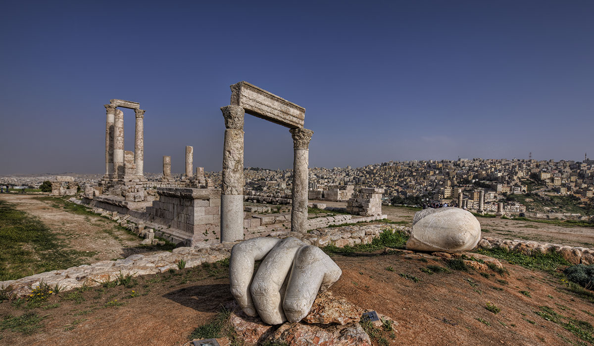
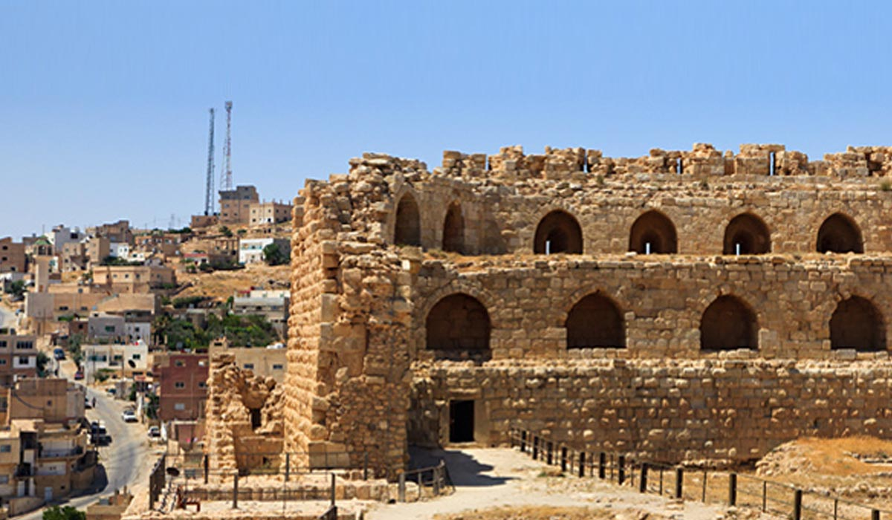
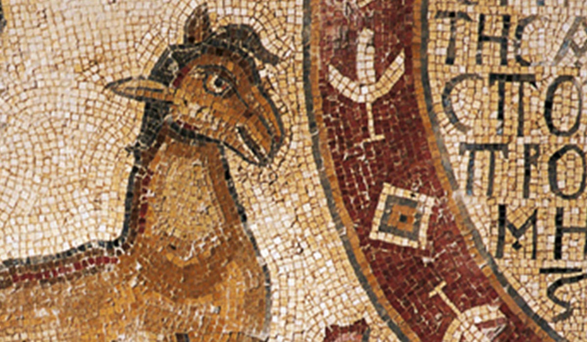
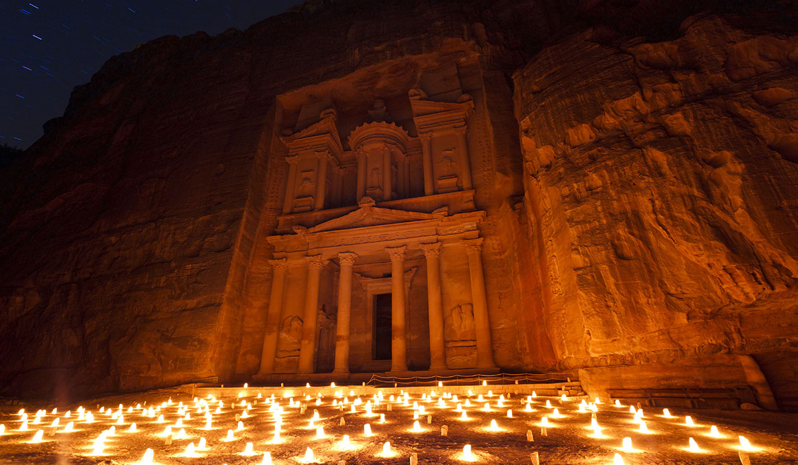
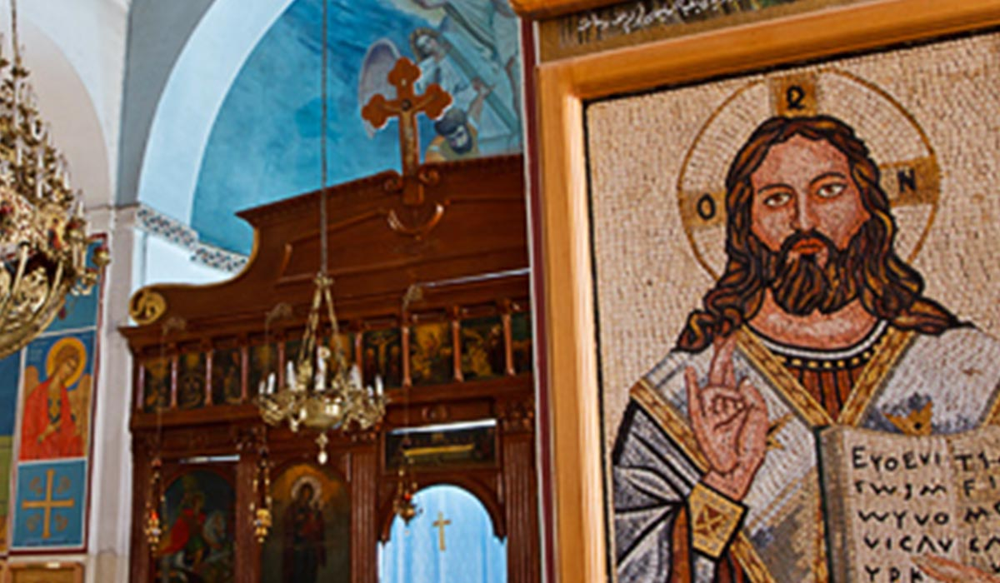
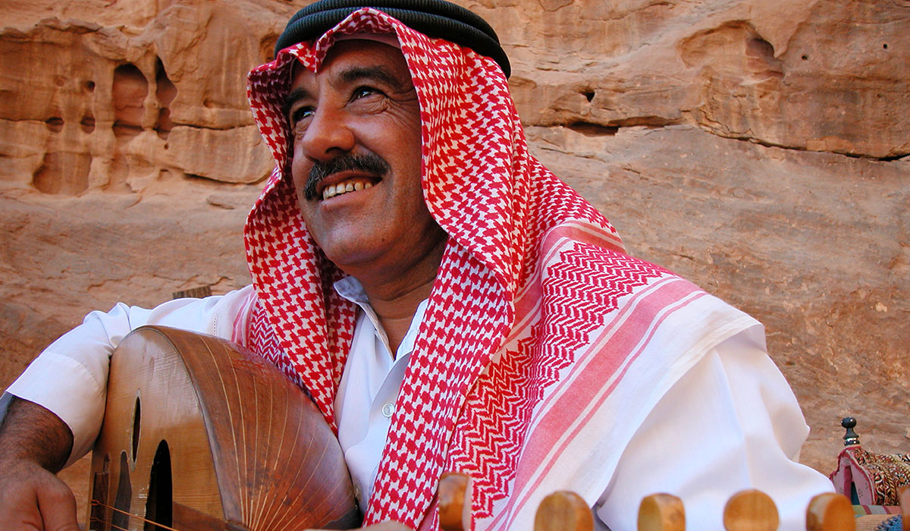

Amman
Eine Stadt, die sich über 19 Hügel („Jebel“) erstreckt: Amman ist die moderne wie auch alte Hauptstadt des Haschemitischen Königreichs von Jordanien. Die antike Stadt, die in der Eisenzeit Rabbath-Ammon und später Philadelphia hieß, gehörte einst zur Dekapolis und hat heute etwa 1,5 Millionen Einwohner.

Karak
Die Burg Karak ist ein dunkles Labyrinth aus Sälen mit gewölbten Decken und endlosen Korridoren. Die am besten erhaltenen Gänge verlaufen unterirdisch und sind über eine wuchtige Tür erreichbar (fragen Sie am Kartenschalter danach). Die Burg selbst ist eher eindrucksvoll als schön, aber dafür als Beispiel des architektonischen und militärischen Könnens der Kreuzritter besonders imposant.

Umm Ar-Rasas
Umm Ar-Rasas Bei Ausgrabungen in Umm Ar-Rasas wurden einige der exquisitesten byzantinischen Kirchenmosaike entdeckt, unter anderem ein großer Mosaikteppich mit Darstellungen von alt- und neutestamentlichen Städten entlang dem Ost- und Westufer des Jordans.

Religion & Glaube
Jordanien ist ein idealer Ort für jeden, der sich kulturell sowie spirituell weiterbilden und -entwickeln möchte: Tauchen Sie ein in diese vielschichtige, spannende Kultur und gehen Sie mit Land und Leuten auf Tuchfühlung.

Madaba
Madaba Die von Amman aus nach Süden führende Reise auf der Strecke des 5.000 Jahre alten King's Highway führt ins wundervolle Madaba: Bestaunen Sie hier spektakuläre byzantinische und umayyadische Mosaike.

Berg Nebo auf den Spuren Moses
Berg Nebo auf den Spuren Moses Vom windgepeitschten Vorgebirge des Nebo aus sah Moses das Tote Meer. Die Pilgerstätte ist noch heute ein sehenswerter Ort mit einer Basilika, die an den Ort erinnert, an dem Moses starb.